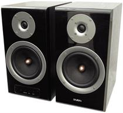

Сравнение компьютерной акустики 2.1 или 2.0 .

Для подавляющего большинства любителей посмотреть кино и послушать музыку на компьютере акустическая система 2.1 будет в самый раз. Но давайте
рассмотрим все преимущества и недостатки 2.1, а для сравнения возьмем колонки 2.0.
2.1
За относительно небольшие деньги вы получаете комплект из двух колонок и одного сабвуфера. Встроенного усилителя размещенного в сабвуфере хватает,
чтобы озвучивать мощные баталии в играх и дрожь земли в кино.
Акустическая система 2.1 построена не плохо, конструкция довольно простая. Две колонки плюс сабвуфер со встроенным в нем усилителем. Иногда
встречаются системы с отдельным усилителем, но они как правило мощнее и дороже. В системе 2.1 часть звука, а именно бас передается на сабвуфер,
а другие частоты распределяются на две колонки-сателлиты в виде средних и высоких частот. Удобно разместив колонки-сателлиты на столе, а саб на полу,
мы получаем максимум удовольствий от звука. Но кроме игр и кино иногда хочется послушать на данной акустике музыку и тут нас предостерегает небольшая
сложность в восприятии. Саб выбрасывая низкие и инфранизкие частоты, тем самым портит прослушивание музыки, вызывая утомление.
2.0
Система 2.0 - представляет собой две компьютерных колонки, в каждой такой акустической колонке стоит низкочастотный динамик. Трехполосная система состоящая из трех
динамиков весьма подходит для прослушивания музыки. Перед вами возникает точная сцена с правильной локализацией инструментов, однако данная система
способна не только озвучивать ваши любимые мелодии на компьютере, но и отлично справится в играх и кино. Причем в кино-эффектах система демонстрирует
явное преимущество перед акустикой 2.1, поскольку эффекты получаются в стерео-режиме. Например звук падающего автомобиля в системе 2.1 слышен, как просто
небольшой эффект и отыгрывает его только саб. На сателлитах-колонках это действие еле слышно. На акустике 2.0 этот эффект отчетливо слышен, а автомобиль
перелетает из одной колонки в другую.
Итог акустическая система 2.1 отлична для фильмов и игр, взрывы, эффекты, выстрелы. Музыку на данной системе слушать можно, но если вы музыкальный гурман
то, скорее всего она вам не подойдет. Система 2.0 отлично подходит для музыки, но и фильмы, можно слушать с большим удовольствием.
Большой выбор колонок Sven смотрите у нас
на сайте.
Следующая статья:
Компьютер ребенку. Правильный выбор.